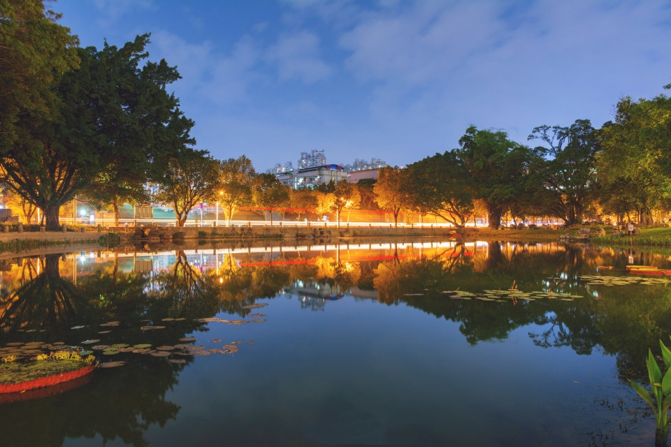
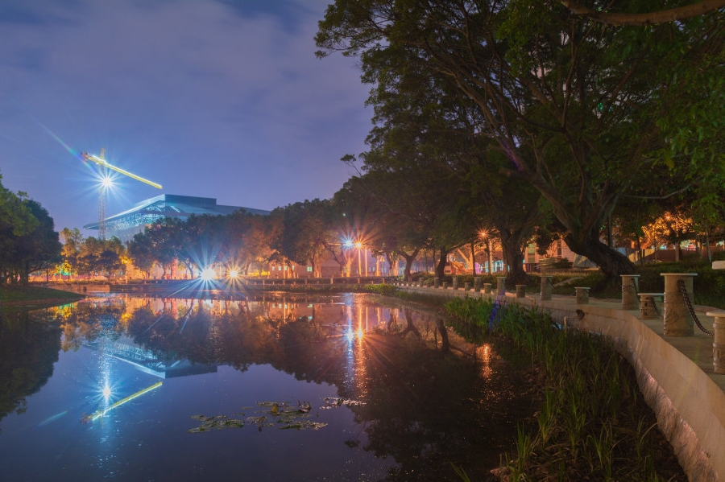

西 大 美 景
西大正门：宏伟壮阔，柔情相伴
因一切为九秩西大蓄力，我踏进这所学校时看不清西大正门的芳容。同庆九秩，待到她的面纱真正揭开，她的美貌令我痴迷。 广西大学正门（南门）的改造工程于6月11号启动，大门装饰11月20日完成；广场、绿化、沥青道路等11月30日完成。正门雄伟壮丽，道路宽敞大气，体现西大磅礴的气势。在这宏伟中蕴藏着丝丝柔情：道路两旁有照亮道路的大灯，夜晚中它熠熠生辉、柔情万种；树木上挂着红彤彤的灯笼，用火红的生机点燃了寒冷的冬季。走进西大正门，正门两侧青翠的草地和姹紫嫣红、错落有致的花簇是如此惹人注目；踏过一条沥青路，时光长廊浮现眼前。这条连通西综合楼的长廊，记录的是西大历史人物的光辉，把西大的历史底蕴展现得淋漓尽致，同时提醒西大学子不忘历史，砥砺前行。西大正门以及周边景色大气而迷人，深深牵绊着西大学子的心
静美碧云湖
行走在去往碧湖苑的路上，那片碧波总会把我的心绪牵引过去。摇曳的树枝，层层散去的涟漪，彼时彼刻，风在碧云湖上拨弦，而碧云湖在我的心上吟唱。从初建，改造，整治等一系列工程，历经七十余年，这座占地约40000平方米的景观工程才有了今天清澈干净的模样。碧云湖汇集广场，驳岸，灯光，雕塑等内容，为无数西大学子和教职工们提供了休闲娱乐额场所。在假期，广场上不乏晨跑锻炼的青年，信步闲庭的老人，有时还有琴音入耳，行走在碧云湖旁，心总是很容易得到安抚。晚上的碧云湖则有另一番美妙，树连着湖，湖连着树，岸上万家灯火，水中星河璀璨。暗黄街灯在湖面洒下一池碎金，随晚风荡漾开去，回应对岸的寂静。
静美碧云湖1
静美碧云湖2
